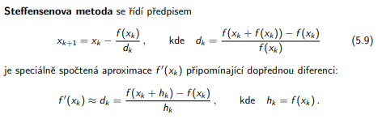
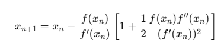

# Řeší soustavu Ax = b
gaussova_metoda <- function(A, b) {
n <- nrow(A); Ab <- cbind(A, b) # Rozšířená matice
# Dopředná eliminace
for (k in 1:(n-1)) {
# Výběr pivota (částečná pivotace)
max_idx <- which.max(abs(Ab[k:n, k])) + k - 1
if (max_idx != k) {
# Prohození řádků
temp <- Ab[k, ]
Ab[k, ] <- Ab[max_idx, ]
Ab[max_idx, ] <- temp
}
# Eliminace
for (i in (k+1):n) {
faktor <- Ab[i, k] / Ab[k, k]
Ab[i, ] <- Ab[i, ] - faktor * Ab[k, ]
}
}
# Zpětná substituce
x <- numeric(n)
x[n] <- Ab[n, n+1] / Ab[n, n]
for (i in (n-1):1) {
x[i] <- (Ab[i, n+1] - sum(Ab[i, (i+1):n] * x[(i+1):n])) / Ab[i, i]
}
return(x)
}Numericke_metody
Metody pro řešení soustavy lineárních rovnic
Gaussova metoda
Metoda LU dekompozice
# Rozloží matici A na L (dolní trojúhelníková) a U (horní trojúhelníková)
# Pak řeší Ly = b a Ux = y
lu_dekompozice <- function(A) {
n <- nrow(A)
L <- diag(n)
U <- A
for (k in 1:(n-1)) {
for (i in (k+1):n) {
if (U[k, k] == 0) {
stop("Pivot je nula - nelze provést LU dekompozici")
}
faktor <- U[i, k] / U[k, k]
L[i, k] <- faktor
U[i, k:n] <- U[i, k:n] - faktor * U[k, k:n]
}
}
return(list(L = L, U = U))
}
# Řešení soustavy pomocí LU dekompozice
reseni_lu <- function(A, b) {
n <- length(b)
LU <- lu_dekompozice(A)
L <- LU$L
U <- LU$U
# Dopředná substituce: Ly = b
y <- numeric(n)
for (i in 1:n) {
y[i] <- b[i] - sum(L[i, 1:(i-1)] * y[1:(i-1)])
}
# Zpětná substituce: Ux = y
x <- numeric(n)
for (i in n:1) {
if (i == n) {
x[i] <- y[i] / U[i, i]
} else {
x[i] <- (y[i] - sum(U[i, (i+1):n] * x[(i+1):n])) / U[i, i]
}
}
return(x)
}Jacobiova metoda

# x^(k+1) = D^(-1) * (b - (L+U)*x^(k))
jacobiova_metoda <- function(A, b, x0 = NULL, tol = 1e-6, max_iter = 1000) {
n <- length(b)
# Počáteční odhad
if (is.null(x0)) {
x <- rep(0, n)
} else {
x <- x0
}
x_new <- numeric(n)
for (iter in 1:max_iter) {
for (i in 1:n) {
suma <- sum(A[i, ] * x) - A[i, i] * x[i]
x_new[i] <- (b[i] - suma) / A[i, i]
}
# Kontrola konvergence
if (max(abs(x_new - x)) < tol) {
cat("Jacobiova metoda konvergovala po", iter, "iteracích\n")
return(x_new)
}
x <- x_new
}
warning("Jacobiova metoda nedosáhla konvergence")
return(x_new)
}Gauss-seidel metoda
# Používá aktualizované hodnoty ihned (rychlejší konvergence než Jacobi)
gauss_seidel <- function(A, b, x0 = NULL, tol = 1e-6, max_iter = 1000) {
n <- length(b)
# Počáteční odhad
if (is.null(x0)) {
x <- rep(0, n)
} else {
x <- x0
}
for (iter in 1:max_iter) {
x_old <- x
for (i in 1:n) {
suma <- 0
if (i > 1) {
suma <- suma + sum(A[i, 1:(i-1)] * x[1:(i-1)])
}
if (i < n) {
suma <- suma + sum(A[i, (i+1):n] * x[(i+1):n])
}
x[i] <- (b[i] - suma) / A[i, i]
}
# Kontrola konvergence
if (max(abs(x - x_old)) < tol) {
cat("Gauss-Seidelova metoda konvergovala po", iter, "iteracích\n")
return(x)
}
}
warning("Gauss-Seidelova metoda nedosáhla konvergence")
return(x)
}A <- matrix(c(4, 1, 1,
1, 5, 2,
2, 3, 8),
nrow = 3, byrow = TRUE)
b <- c(7, 11, 17)
cat("Soustava rovnic:\n")
cat("4x + y + z = 7\n")
cat("x + 5y + 2z = 11\n")
cat("2x + 3y + 8z = 17\n")
cat("Správné řešení: x = 1, y = 1, z = 1\n")
x_gauss <- gaussova_metoda(A, b)
cat("Řešení: x =", round(x_gauss[1], 6), ", y =", round(x_gauss[2], 6), ", z =", round(x_gauss[3], 6), "\n\n")
x_lu <- reseni_lu(A, b)
cat("Řešení: x =", round(x_lu[1], 6), ", y =", round(x_lu[2], 6), ", z =", round(x_lu[3], 6), "\n\n")
x_jacobi <- jacobiova_metoda(A, b, tol = 1e-6)
cat("Řešení: x =", round(x_jacobi[1], 6), ", y =", round(x_jacobi[2], 6), ", z =", round(x_jacobi[3], 6), "\n\n")
x_gs <- gauss_seidel(A, b, tol = 1e-6)
cat("Řešení: x =", round(x_gs[1], 6), ", y =", round(x_gs[2], 6), ", z =", round(x_gs[3], 6), "\n\n")
cat("VERIFIKACE ŘEŠENÍ (A*x by mělo být rovno b)\n")
cat("Gaussova metoda: A*x =", round(A %*% x_gauss, 6), "\n")
cat("LU dekompozice: A*x =", round(A %*% x_lu, 6), "\n")
cat("Jacobiova metoda: A*x =", round(A %*% x_jacobi, 6), "\n")
cat("Gauss-Seidelova: A*x =", round(A %*% x_gs, 6), "\n")
cat("Očekáváno: b =", b, "\n\n")Soustava rovnic:
4x + y + z = 7
x + 5y + 2z = 11
2x + 3y + 8z = 17
Správné řešení: x = 1, y = 1, z = 1
Řešení: x = 1.056 , y = 1.464 , z = 1.312
Řešení: x = 1.056 , y = 1.464 , z = 1.312
Jacobiova metoda konvergovala po 28 iteracích
Řešení: x = 1.056 , y = 1.464 , z = 1.312
Gauss-Seidelova metoda konvergovala po 10 iteracích
Řešení: x = 1.056 , y = 1.464 , z = 1.312
VERIFIKACE ŘEŠENÍ (A*x by mělo být rovno b)
Gaussova metoda: A*x = 7 11 17
LU dekompozice: A*x = 7 11 17
Jacobiova metoda: A*x = 6.999998 11 17
Gauss-Seidelova: A*x = 7 11 17
Očekáváno: b = 7 11 17 Metody pro řešení nelineárních rovnic
f <- function(x) x^2 - 4; df <- function(x) 2*x; d2f <- function(x) 2Newtonova metoda
newton_method <- function(f, df, x0, tol = 1e-7, max_iter = 100) {
x <- x0
for (i in 1:max_iter) {
fx <- f(x)
dfx <- df(x)
if (abs(dfx) < 1e-15) {
stop("Derivace je příliš blízko nule")
}
x_new <- x - fx / dfx
if (abs(x_new - x) < tol) {
return(list(root = x_new, iterations = i, converged = TRUE))
}
x <- x_new
}
return(list(root = x, iterations = max_iter, converged = FALSE))
}
result <- newton_method(f, df, x0 = 1)
cat(sprintf("1. Newton: x = %.10f, iterací: %d\n", result$root, result$iterations))1. Newton: x = 2.0000000000, iterací: 5Steffensonova metoda

steffenson_method <- function(f, x0, tol = 1e-7, max_iter = 100) {
x <- x0
for (i in 1:max_iter) {
fx <- f(x)
fxh <- f(x + fx)
denom <- fxh - fx
if (abs(denom) < 1e-20) {
stop("Dělení nulou")
}
x_new <- x - fx^2 / denom
if (abs(x_new - x) < tol) {
return(list(root = x_new, iterations = i, converged = TRUE))
}
x <- x_new
}
return(list(root = x, iterations = max_iter, converged = FALSE))
}
result <- steffenson_method(f, x0 = 0)
cat(sprintf("2. Steffenson: x = %.10f, iterací: %d\n", result$root, result$iterations))2. Steffenson: x = -2.0000000000, iterací: 7Halleyova metoda
halley_method <- function(f, df, d2f, x0, tol = 1e-7, max_iter = 100) {
x <- x0
for (i in 1:max_iter) {
fx <- f(x)
dfx <- df(x)
d2fx <- d2f(x)
denom <- 2 * dfx^2 - fx * d2fx
if (abs(denom) < 1e-15) {
stop("Dělení nulou")
}
x_new <- x - (2 * fx * dfx) / denom
if (abs(x_new - x) < tol) {
return(list(root = x_new, iterations = i, converged = TRUE))
}
x <- x_new
}
return(list(root = x, iterations = max_iter, converged = FALSE))
}
result <- halley_method(f, df, d2f, x0 = 1)
cat(sprintf("3. Halley: x = %.10f, iterací: %d\n", result$root, result$iterations))3. Halley: x = 2.0000000000, iterací: 4Chebyshew method (polynom)

chebyshev_method <- function(f, df, d2f, x0, tol = 1e-7, max_iter = 100) {
x <- x0
for (i in 1:max_iter) {
fx <- f(x); dfx <- df(x); d2fx <- d2f(x) #funkce
if (abs(dfx) < 1e-15) { stop("Derivace je příliš blízko nule") }
x_new <- x - fx / dfx - (fx^2 * d2fx) / (2 * dfx^3)
if (abs(x_new - x) < tol) { return(list(root = x_new, iterations = i, converged = TRUE)) }
x <- x_new
}
return(list(root = x, iterations = max_iter, converged = FALSE))
}
result <- chebyshev_method(f, df, d2f, x0 = 1)
cat(sprintf("4. Chebyshev: x = %.10f, iterací: %d\n", result$root, result$iterations))4. Chebyshev: x = 2.0000000000, iterací: 5Bisekce
bisection_method <- function(f, a, b, tol = 1e-7, max_iter = 100) {
if (f(a) * f(b) > 0) {
stop("Funkce musí mít různá znaménka na koncích intervalu")
}
for (i in 1:max_iter) {
c <- (a + b) / 2
fc <- f(c)
if (abs(fc) < tol || (b - a) / 2 < tol) {
return(list(root = c, iterations = i, converged = TRUE))
}
if (f(a) * fc < 0) {
b <- c
} else {
a <- c
}
}
return(list(root = (a + b) / 2, iterations = max_iter, converged = FALSE))
}
result <- bisection_method(f, a = 0, b = 3)
cat(sprintf("5. Bisekce: x = %.10f, iterací: %d\n", result$root, result$iterations))5. Bisekce: x = 1.9999999702, iterací: 25Regula-falsi metoda
Místo středu intervalu používá průsečík sečny mezi body (a, f(a), b, f(b)). Rychlejší než Bisekce.
regula_falsi_method <- function(f, a, b, tol = 1e-7, max_iter = 100) {
if (f(a) * f(b) > 0) {
stop("Funkce musí mít různá znaménka na koncích intervalu")
}
for (i in 1:max_iter) {
fa <- f(a)
fb <- f(b)
c <- (a * fb - b * fa) / (fb - fa)
fc <- f(c)
if (abs(fc) < tol) {
return(list(root = c, iterations = i, converged = TRUE))
}
if (fa * fc < 0) {
b <- c
} else {
a <- c
}
}
return(list(root = c, iterations = max_iter, converged = FALSE))
}
result <- regula_falsi_method(f, a = 0, b = 3)
cat(sprintf("6. Regula-falsi: x = %.10f, iterací: %d\n", result$root, result$iterations))6. Regula-falsi: x = 1.9999999836, iterací: 12Newton-Hornerova metoda (pro polynomy)
newton_horner_method <- function(coef, x0, tol = 1e-7, max_iter = 100) {
# coef je vektor koeficientů od nejvyššího stupně k nejnižšímu
# např. pro x^3 - 2x + 1: coef = c(1, 0, -2, 1)
x <- x0; n <- length(coef)
for (iter in 1:max_iter) {
# Hornerovo schéma pro hodnotu polynomu
p <- coef[1]
for (i in 2:n) {
p <- p * x + coef[i]
}
# Hornerovo schéma pro derivaci
dp <- coef[1]
for (i in 2:(n-1)) {
dp <- dp * x + coef[i]
}
if (abs(dp) < 1e-15) { stop("Derivace je příliš blízko nule") }
x_new <- x - p / dp
if (abs(x_new - x) < tol) {
return(list(root = x_new, iterations = iter, converged = TRUE))
}
x <- x_new
}
return(list(root = x, iterations = max_iter, converged = FALSE))
}
result <- newton_horner_method(coef = c(1, 0, -4), x0 = 1)
cat(sprintf("7. Newton-Horner: x = %.10f, iterací: %d\n", result$root, result$iterations))7. Newton-Horner: x = 1.0000000000, iterací: 100newton_horner_method(c(-2, 0, 1), 2) #výpočet korene polynomu s počátečním odhadem$root
[1] 2
$iterations
[1] 100
$converged
[1] FALSEMetoda prostých iterací
simple_iteration_method <- function(g, x0, tol = 1e-7, max_iter = 100) {
# g je iterační funkce: x_{n+1} = g(x_n)
# Pro řešení f(x) = 0, převedeme na x = g(x)
x <- x0
for (i in 1:max_iter) {
x_new <- g(x)
if (abs(x_new - x) < tol) {
return(list(root = x_new, iterations = i, converged = TRUE))
}
x <- x_new
}
return(list(root = x, iterations = max_iter, converged = FALSE))
}
g <- function(x) sqrt(4) # Jednoduché: x = 2
result <- simple_iteration_method(g, x0 = 1)
cat(sprintf("8. Prosté iterace: x = %.10f, iterací: %d\n", result$root, result$iterations))8. Prosté iterace: x = 2.0000000000, iterací: 2Numerické řešení ODE
Eulerova metoda
# Řeší dy/dt = f(t, y) s počáteční podmínkou y(t0) = y0
eulerova_metoda <- function(f, t0, y0, t_konec, h) {
# f - funkce f(t, y) reprezentující dy/dt
# t0 - počáteční čas
# y0 - počáteční hodnota
# t_konec - koncový čas
# h - krok
n <- ceiling((t_konec - t0) / h)
t <- seq(t0, t0 + n*h, by = h)
y <- numeric(n + 1)
y[1] <- y0
for (i in 1:n) {
y[i + 1] <- y[i] + h * f(t[i], y[i])
}
return(data.frame(t = t, y = y))
}Runge kutta metoda
# Přesnost: střední
runge_kutta_2 <- function(f, t0, y0, t_konec, h) {
n <- ceiling((t_konec - t0) / h)
t <- seq(t0, t0 + n*h, by = h)
y <- numeric(n + 1)
y[1] <- y0
for (i in 1:n) {
k1 <- f(t[i], y[i])
k2 <- f(t[i] + h, y[i] + h * k1)
y[i + 1] <- y[i] + h * (k1 + k2) / 2
}
return(data.frame(t = t, y = y))
}
# Přesnost: vysoká
runge_kutta_4 <- function(f, t0, y0, t_konec, h) {
n <- ceiling((t_konec - t0) / h)
t <- seq(t0, t0 + n*h, by = h)
y <- numeric(n + 1)
y[1] <- y0
for (i in 1:n) {
k1 <- f(t[i], y[i])
k2 <- f(t[i] + h/2, y[i] + h/2 * k1)
k3 <- f(t[i] + h/2, y[i] + h/2 * k2)
k4 <- f(t[i] + h, y[i] + h * k3)
y[i + 1] <- y[i] + h * (k1 + 2*k2 + 2*k3 + k4) / 6
}
return(data.frame(t = t, y = y))
}vykresli_reseni <- function(vysledky, analyticky = NULL, title = "Řešení ODE") {
plot(vysledky$t, vysledky$y, type = "l", col = "blue", lwd = 2, xlab = "t", ylab = "y(t)", main = title)
points(vysledky$t, vysledky$y, pch = 19, col = "blue", cex = 0.5)
# Pokud existuje analytické řešení, přidej ho
if (!is.null(analyticky)) {
t_jemny <- seq(min(vysledky$t), max(vysledky$t), length.out = 200)
y_analyticky <- sapply(t_jemny, analyticky)
lines(t_jemny, y_analyticky, col = "red", lwd = 2, lty = 2)
legend("topleft", legend = c("Numerické řešení", "Analytické řešení"), col = c("blue", "red"), lty = c(1, 2), lwd = 2)
}
grid()
}
# PŘÍKLAD 1: Jednoduchá ODE - exponenciální růst
cat("PŘÍKLAD 1: dy/dt = y, y(0) = 1\n")
cat("Analytické řešení: y(t) = e^t\n")
f1 <- function(t, y) y
analyticky1 <- function(t) exp(t)
reseni1 <- runge_kutta_4(f1, t0 = 0, y0 = 1, t_konec = 2, h = 0.1)
vykresli_reseni(reseni1, analyticky = analyticky1,
title = "dy/dt = y (exponenciální růst)")# Porovnání přesnosti
cat("Porovnání v t = 2:\n")
cat("RK4: ", tail(reseni1$y, 1), "\n")
cat("Analyticky: ", exp(2), "\n")
cat("Chyba: ", abs(tail(reseni1$y, 1) - exp(2)), "\n\n")
# PŘÍKLAD 2: Harmonický oscilátor (převedený na systém 1. řádu)
cat("\nPŘÍKLAD 2: dy/dt = -t*y, y(0) = 1\n")
cat("Analytické řešení: y(t) = e^(-t²/2)\n")
f2 <- function(t, y) -t * y
analyticky2 <- function(t) exp(-t^2/2)
reseni2 <- runge_kutta_4(f2, t0 = 0, y0 = 1, t_konec = 3, h = 0.1)
vykresli_reseni(reseni2, analyticky = analyticky2,
title = "dy/dt = -t*y (Gaussova křivka)")# PŘÍKLAD 3: Logistický růst
cat("\nPŘÍKLAD 3: dy/dt = y*(1-y), y(0) = 0.1\n")
cat("Logistický růst populace\n")
f3 <- function(t, y) y * (1 - y)
reseni3_euler <- eulerova_metoda(f3, t0 = 0, y0 = 0.1, t_konec = 10, h = 0.5)
reseni3_rk4 <- runge_kutta_4(f3, t0 = 0, y0 = 0.1, t_konec = 10, h = 0.5)
plot(reseni3_euler$t, reseni3_euler$y, type = "l", col = "blue", lwd = 2,
xlab = "t", ylab = "y(t)", main = "Logistický růst: Euler vs RK4")
lines(reseni3_rk4$t, reseni3_rk4$y, col = "red", lwd = 2)
legend("right", legend = c("Euler", "RK4"),
col = c("blue", "red"), lty = 1, lwd = 2)
grid()# Výpočet chyb
euler_vysl <- eulerova_metoda(f1, 0, 1, 2, 0.2)
rk2_vysl <- runge_kutta_2(f1, 0, 1, 2, 0.2)
rk4_vysl <- runge_kutta_4(f1, 0, 1, 2, 0.2)
cat("\nChyby v t = 2 (krok h = 0.2):\n")
cat("Euler: ", abs(tail(euler_vysl$y, 1) - exp(2)), "\n")
cat("RK2: ", abs(tail(rk2_vysl$y, 1) - exp(2)), "\n")
cat("RK4: ", abs(tail(rk4_vysl$y, 1) - exp(2)), "\n\n")
cat("\nPŘÍKLAD 5: Vliv velikosti kroku na přesnost (Eulerova metoda)\n")
par(mfrow = c(2, 2))
kroky <- c(0.5, 0.2, 0.1, 0.05)
for (h in kroky) {
vysl <- eulerova_metoda(f1, 0, 1, 2, h)
vykresli_reseni(vysl, analyticky = analyticky1, title = paste("Euler, h =", h))
chyba <- abs(tail(vysl$y, 1) - exp(2))
cat("h =", h, " → chyba:", round(chyba, 6), "\n")
}par(mfrow = c(1, 1))
cat("\nPŘÍKLAD 6: Radioaktivní rozpad\n")
cat("dy/dt = -0.5*y, y(0) = 100\n")
f6 <- function(t, y) -0.5 * y
analyticky6 <- function(t) 100 * exp(-0.5 * t)
reseni6 <- runge_kutta_4(f6, t0 = 0, y0 = 100, t_konec = 10, h = 0.2)
vykresli_reseni(reseni6, analyticky = analyticky6,
title = "Radioaktivní rozpad")cat("Poločas rozpadu (t kdy y = 50):\n")
idx <- which.min(abs(reseni6$y - 50))
cat("Numericky: t ≈", reseni6$t[idx], "\n")
cat("Analyticky: t = ln(2)/0.5 =", log(2)/0.5, "\n")PŘÍKLAD 1: dy/dt = y, y(0) = 1
Analytické řešení: y(t) = e^t
Porovnání v t = 2:
RK4: 7.389045
Analyticky: 7.389056
Chyba: 1.133156e-05
PŘÍKLAD 2: dy/dt = -t*y, y(0) = 1
Analytické řešení: y(t) = e^(-t²/2)
PŘÍKLAD 3: dy/dt = y*(1-y), y(0) = 0.1
Logistický růst populace
Chyby v t = 2 (krok h = 0.2):
Euler: 1.19732
RK2: 0.08442468
RK4: 0.0001668573
PŘÍKLAD 5: Vliv velikosti kroku na přesnost (Eulerova metoda)
h = 0.5 → chyba: 2.326556
h = 0.2 → chyba: 1.19732
h = 0.1 → chyba: 0.661556
h = 0.05 → chyba: 0.349067
PŘÍKLAD 6: Radioaktivní rozpad
dy/dt = -0.5*y, y(0) = 100
Poločas rozpadu (t kdy y = 50):
Numericky: t ≈ 1.4
Analyticky: t = ln(2)/0.5 = 1.386294 Interpolace
x_data <- c(0, 1, 2, 3, 4); y_data <- c(1, 3, 2, 5, 4); dy_data <- c(2, 0, 1, 2, -1) # Derivace pro Hermite
# Body pro vyhodnocení
x_eval <- seq(0, 4, by = 0.1)
cat("Interpolační body:\n")Interpolační body:for (i in 1:length(x_data)) { cat(sprintf(" (%g, %g)\n", x_data[i], y_data[i])) } (0, 1)
(1, 3)
(2, 2)
(3, 5)
(4, 4)Lineární interpolace
linear_interpolation <- function(x_data, y_data, x_eval) {
n <- length(x_data); y_eval <- numeric(length(x_eval))
for (k in 1:length(x_eval)) {
x <- x_eval[k]
# Najdi interval obsahující x
if (x <= x_data[1]) {
# Extrapolace vlevo
y_eval[k] <- y_data[1] + (y_data[2] - y_data[1]) / (x_data[2] - x_data[1]) * (x - x_data[1])
} else if (x >= x_data[n]) {
# Extrapolace vpravo
y_eval[k] <- y_data[n-1] + (y_data[n] - y_data[n-1]) / (x_data[n] - x_data[n-1]) * (x - x_data[n-1])
} else {
# Interpolace
i <- max(which(x_data <= x))
t <- (x - x_data[i]) / (x_data[i+1] - x_data[i])
y_eval[k] <- (1 - t) * y_data[i] + t * y_data[i+1]
}
}
return(y_eval)
}
y1 <- linear_interpolation(x_data, y_data, 2.5)
cat(sprintf("1. Lineární interpolace: %.6f\n", y1))1. Lineární interpolace: 3.500000Lagrangeova interpolace
lagrange_interpolation <- function(x_data, y_data, x_eval) {
n <- length(x_data)
y_eval <- numeric(length(x_eval))
for (k in 1:length(x_eval)) {
x <- x_eval[k]
result <- 0 #suma
for (i in 1:n) { # Vypočítej Lagrangeův bázový polynom L_i(x)
L_i <- 1 #i
for (j in 1:n) {
if (i != j) {
L_i <- L_i * (x - x_data[j]) / (x_data[i] - x_data[j])
}
}
result <- result + y_data[i] * L_i
}
y_eval[k] <- result
}
return(y_eval)
}
y2 <- lagrange_interpolation(x_data, y_data, 2.5)
cat(sprintf("2. Lagrangeova interpolace: %.6f\n", y2))2. Lagrangeova interpolace: 3.148438Newtonova interpolace
newton_divided_differences <- function(x_data, y_data) {
n <- length(x_data)
F <- matrix(0, n, n)
F[, 1] <- y_data
for (j in 2:n) {
for (i in j:n) {
F[i, j] <- (F[i, j-1] - F[i-1, j-1]) / (x_data[i] - x_data[i-j+1])
}
}
return(diag(F)) # Vrátí koeficienty
}
newton_interpolation <- function(x_data, y_data, x_eval) {
coef <- newton_divided_differences(x_data, y_data)
n <- length(x_data); y_eval <- numeric(length(x_eval))
for (k in 1:length(x_eval)) {
x <- x_eval[k]
result <- coef[1]
product <- 1
for (i in 2:n) {
product <- product * (x - x_data[i-1])
result <- result + coef[i] * product
}
y_eval[k] <- result
}
return(y_eval)
}
y3 <- newton_interpolation(x_data, y_data, 2.5)
cat(sprintf("3. Newtonova interpolace: %.6f\n", y3))3. Newtonova interpolace: 3.148438Vandermondova interpolace
vandermonde_interpolation <- function(x_data, y_data) {
n <- length(x_data); V <- matrix(0, n, n)
# Vytvoř Vandermondovu matici
for (i in 1:n) {
for (j in 1:n) {
V[i, j] <- x_data[i]^(j-1)
}
}
# Vyřeš V * coef = y
coef <- solve(V, y_data)
return(coef) # Koeficienty od a0 do a_{n-1}
}
vandermonde_eval <- function(coef, x_eval) {
n <- length(coef); y_eval <- numeric(length(x_eval))
for (k in 1:length(x_eval)) {
x <- x_eval[k]
result <- 0
for (i in 1:n) {
result <- result + coef[i] * x^(i-1)
}
y_eval[k] <- result
}
return(y_eval)
}
coef_vand <- vandermonde_interpolation(x_data, y_data)
y4 <- vandermonde_eval(coef_vand, 2.5)
cat(sprintf("4. Vandermondova interpolace: %.6f\n", y4))4. Vandermondova interpolace: 3.148437Hornerovo schéma
horner <- function(coef, x_eval) {
# coef od nejvyššího stupně k nejnižšímu: [a_n, a_{n-1}, ..., a_1, a_0]
n <- length(coef)
y_eval <- numeric(length(x_eval))
for (k in 1:length(x_eval)) {
x <- x_eval[k]
result <- coef[1]
for (i in 2:n) {
result <- result * x + coef[i]
}
y_eval[k] <- result
}
return(y_eval)
}
coef_horner <- rev(coef_vand)
y5 <- horner(coef_horner, 2.5)
cat(sprintf("5. Hornerovo schéma (Vand.coef): %.6f\n", y5))5. Hornerovo schéma (Vand.coef): 3.148437Hermitova interpolace

hermite_interpolation <- function(x_data, y_data, dy_data, x_eval) {
# x_data: body, y_data: hodnoty, dy_data: derivace
n <- length(x_data)
m <- 2 * n # Každý bod má 2 podmínky (hodnota + derivace)
# Vytvoř rozdělené diference pro Hermiteovu interpolaci
z <- rep(x_data, each = 2) # Zdvojené body
Q <- matrix(0, m, m)
# První sloupec: hodnoty
for (i in 1:n) {
Q[2*i-1, 1] <- y_data[i]
Q[2*i, 1] <- y_data[i]
}
# Druhý sloupec: derivace a první dělené diference
for (i in 1:n) {
Q[2*i, 2] <- dy_data[i]
if (i < n) {
Q[2*i+1, 2] <- (Q[2*i+1, 1] - Q[2*i, 1]) / (z[2*i+1] - z[2*i])
}
}
# Vyšší dělené diference
for (j in 3:m) {
for (i in j:m) {
Q[i, j] <- (Q[i, j-1] - Q[i-1, j-1]) / (z[i] - z[i-j+1])
}
}
# Vyhodnocení pomocí Newtonovy formy
y_eval <- numeric(length(x_eval))
coef <- diag(Q)
for (k in 1:length(x_eval)) {
x <- x_eval[k]
result <- coef[1]
product <- 1
for (i in 2:m) {
product <- product * (x - z[i-1])
result <- result + coef[i] * product
}
y_eval[k] <- result
}
return(y_eval)
}
y6 <- hermite_interpolation(x_data, y_data, dy_data, 2.5)
cat(sprintf("6. Hermitova interpolace: %.6f\n", y6))6. Hermitova interpolace: 3.342300Vykreslení chebyshevových koeficientů pomocí Hornerova schématu
# Vyhodnotí polynom v bodě x (rychlý způsob)
Horner <- function(koeficienty, x) {
n <- length(koeficienty)
vysledek <- koeficienty[n]
for (i in (n-1):1) {
vysledek <- vysledek * x + koeficienty[i]
}
return(vysledek)
}
ChebyshevCoef <- function(n){ # n(počet Čebyševových polynomů, které se mají vygenerovat)
#vytvoří se prázdné vektory a0 a a1. Pro první a druhý polynom jsou nastaveny specicické hodnoty (T0(x) = 1 a T1(x) =x)
a0 <- numeric(n); a0[1] <- 1 #první čeb. polynom T0(x) = 1
if(n==1) return(a0) #pokud n=1 vrátíme koeficienty polynomu T0(x)=1
a1 <- numeric(n); a1[2] <- 1 #druhý čeb. polynom T1(x) = x
if(n==2) return(a1) #pokud n=2 vrátíme koeficienty T1(x)=x
for(i in 3:n){ #uchováváme 2 poslední polynomy Tn-2(x) a Tn-1(x)
a <- 2*c(0, a1[-n])-a0 #použítím rek. rci.: Tn(x)=2xTn-1(x)-Tn-2(x)
a0 <- a1 #posuneme polynomy
a1 <- a
}
return(a) #vrátíme koeficienty posl. polynomu T_n(x)
}
x <- seq(-1,1,0.0001)
#Čebyševovy polynomy
plot(x, sapply(x, function(x) Horner(ChebyshevCoef(1), x)[1]), ylim=c(-1,1), type='l', col='black') #čára
#vykreslení sincos funkcí
for(i in 2:5) lines(x, sapply(x, function(x) Horner(ChebyshevCoef(i), x)[1]), ylim=c(-1,1), type='l', col=i+1)Aproximace
LSA + Horner
# Najde koeficienty polynomu, který nejlépe aproximuje data
nejmensi_ctverce <- function(x, y, stupen) {
n <- length(x)
# Vytvoření matice A (Vandermondova matice)
A <- matrix(0, nrow = n, ncol = stupen + 1)
for (i in 1:n) {
for (j in 1:(stupen + 1)) {
A[i, j] <- x[i]^(j - 1)
}
}
# Řešení: (A^T * A) * koef = A^T * y
koeficienty <- solve(t(A) %*% A, t(A) %*% y)
return(koeficienty)
}
# Vyhodnotí polynom v bodě x (rychlý způsob)
horner <- function(koeficienty, x) {
n <- length(koeficienty)
vysledek <- koeficienty[n]
for (i in (n-1):1) {
vysledek <- vysledek * x + koeficienty[i]
}
return(vysledek)
}
# Pro vykreslení křivky
vyhodnot_polynom <- function(koeficienty, x_hodnoty) {
y_hodnoty <- sapply(x_hodnoty, function(x) horner(koeficienty, x))
return(y_hodnoty)
}
vypocet_chyby <- function(x, y, koeficienty) {
y_pred <- vyhodnot_polynom(koeficienty, x)
mse <- mean((y - y_pred)^2)
rmse <- sqrt(mse)
return(list(MSE = mse, RMSE = rmse))
}
vykresli_aproximaci <- function(x, y, koeficienty, stupen) {
# Vytvoř hladkou křivku
x_krivka <- seq(min(x), max(x), length.out = 200)
y_krivka <- sapply(x_krivka, function(xi) horner(koeficienty, xi))
# Nakresli graf
plot(x, y, pch = 19, col = "blue", cex = 1.5, xlab = "x", ylab = "y", main = paste("Aproximace polynomem stupně", stupen))
lines(x_krivka, y_krivka, col = "red", lwd = 2)
legend("topleft", legend = c("Data", "Aproximace"), col = c("blue", "red"), pch = c(19, NA), lty = c(NA, 1), lwd = c(NA, 2))
grid()
}
#přímka
x1 <- c(1, 2, 3, 4, 5, 6)
y1 <- c(2.2, 4.1, 5.8, 8.2, 10.1, 11.9)
koef1 <- nejmensi_ctverce(x1, y1, stupen = 1)
cat("Koeficienty: a0 =", round(koef1[1], 2), ", a1 =", round(koef1[2], 2), "\n")
cat("Rovnice: y =", round(koef1[1], 2), "+", round(koef1[2], 2), "* x\n\n")
vykresli_aproximaci(x1, y1, koef1, stupen = 1)#parabola
x2 <- c(0, 1, 2, 3, 4, 5)
y2 <- c(1, 2, 5, 10, 17, 26)
koef2 <- nejmensi_ctverce(x2, y2, stupen = 2)
cat("Koeficienty: a0 =", round(koef2[1], 2), ", a1 =", round(koef2[2], 2), ", a2 =", round(koef2[3], 2), "\n")
cat("Rovnice: y =", round(koef2[1], 2), "+", round(koef2[2], 2), "* x +", round(koef2[3], 2), "* x²\n\n")
vykresli_aproximaci(x2, y2, koef2, stupen = 2)#přímka se šumem
set.seed(123)
x3 <- seq(0, 10, by = 1)
y3 <- 3 * x3 + 5 + rnorm(length(x3), sd = 3) # Přímka se šumem
koef3 <- nejmensi_ctverce(x3, y3, stupen = 1)
cat("Koeficienty: a0 =", round(koef3[1], 2),
", a1 =", round(koef3[2], 2), "\n\n")
vykresli_aproximaci(x3, y3, koef3, stupen = 1)#horner
# Polynom: y = 1 + 2x + 3x²
koef_test <- c(1, 2, 3); x_test <- 5
y_vysledek <- horner(koef_test, x_test)
cat("Polynom: y = 1 + 2x + 3x²\n")
cat("Vyhodnocení v x =", x_test, "\n")
cat("Výsledek: y =", y_vysledek, "\n")
cat("Kontrola: 1 + 2*5 + 3*5² =", 1 + 2*5 + 3*5^2, "\n\n")Koeficienty: a0 = 0.16 , a1 = 1.97
Rovnice: y = 0.16 + 1.97 * x
Koeficienty: a0 = 1 , a1 = 0 , a2 = 1
Rovnice: y = 1 + 0 * x + 1 * x²
Koeficienty: a0 = 5.68 , a1 = 2.97
Polynom: y = 1 + 2x + 3x²
Vyhodnocení v x = 5
Výsledek: y = 86
Kontrola: 1 + 2*5 + 3*5² = 86 Numerické derivace
# Testovací funkce: f(x) = x³
# f'(x) = 3x²
# f''(x) = 6x
f <- function(x) x^3Dopředná diference
dopredna_diference <- function(f, x, h = 1e-5) {
derivace <- (f(x + h) - f(x)) / h
return(derivace)
}Zpětná diference
zpetna_diference <- function(f, x, h = 1e-5) {
derivace <- (f(x) - f(x - h)) / h
return(derivace)
}Centrální diference I.
centralni_diference_1 <- function(f, x, h = 1e-5) {
derivace <- (f(x + h) - f(x - h)) / (2 * h)
return(derivace)
}Richardsonova extrapolace I.
# Vylepšuje přesnost centrální diference použitím více kroků
richardsonova_extrapolace_1 <- function(f, x, h = 1e-2, k = 4) {
# Matice pro Richardsonovu extrapolaci
D <- matrix(0, nrow = k, ncol = k)
# První sloupec - centrální diference s různými h
for (i in 1:k) {
h_i <- h / (2^(i-1))
D[i, 1] <- (f(x + h_i) - f(x - h_i)) / (2 * h_i)
}
# Extrapolace
for (j in 2:k) {
for (i in j:k) {
D[i, j] <- (4^(j-1) * D[i, j-1] - D[i-1, j-1]) / (4^(j-1) - 1)
}
}
return(D[k, k])
}Centrální diference II.

centralni_diference_2 <- function(f, x, h = 1e-5) {
derivace <- (f(x + h) - 2 * f(x) + f(x - h)) / (h^2)
return(derivace)
}Richardsonova extrapolace II.
richardsonova_extrapolace_2 <- function(f, x, h = 1e-2, k = 4) {
# Matice pro Richardsonovu extrapolaci
D <- matrix(0, nrow = k, ncol = k)
# První sloupec - centrální diference pro druhou derivaci
for (i in 1:k) {
h_i <- h / (2^(i-1))
D[i, 1] <- (f(x + h_i) - 2 * f(x) + f(x - h_i)) / (h_i^2)
}
# Extrapolace
for (j in 2:k) {
for (i in j:k) {
D[i, j] <- (4^(j-1) * D[i, j-1] - D[i-1, j-1]) / (4^(j-1) - 1)
}
}
return(D[k, k])
}# f'(x) = 3x²
# f''(x) = 6x
f <- function(x) x^3
x0 <- 2 # Bod, ve kterém počítáme derivaci
cat("PRVNÍ DERIVACE (správná hodnota: 12)\n")
cat("Dopředná diference: ", dopredna_diference(f, x0), "\n")
cat("Zpětná diference: ", zpetna_diference(f, x0), "\n")
cat("Centrální diference: ", centralni_diference_1(f, x0), "\n")
cat("Richardsonova extrapolace: ", richardsonova_extrapolace_1(f, x0), "\n")
cat("\nDRUHÁ DERIVACE (správná hodnota: 12)\n")
cat("Centrální diference: ", centralni_diference_2(f, x0), "\n")
cat("Richardsonova extrapolace: ", richardsonova_extrapolace_2(f, x0), "\n")
g <- function(x) sin(x)
x1 <- pi/4
cat("\nPRVNÍ DERIVACE (správná hodnota: 0.7071068)\n")
cat("Centrální diference: ", centralni_diference_1(g, x1), "\n")
cat("Richardsonova extrapolace: ", richardsonova_extrapolace_1(g, x1), "\n")
cat("\nDRUHÁ DERIVACE (správná hodnota: -0.7071068)\n")
cat("Centrální diference: ", centralni_diference_2(g, x1), "\n")
cat("Richardsonova extrapolace: ", richardsonova_extrapolace_2(g, x1), "\n")PRVNÍ DERIVACE (správná hodnota: 12)
Dopředná diference: 12.00006
Zpětná diference: 11.99994
Centrální diference: 12
Richardsonova extrapolace: 12
DRUHÁ DERIVACE (správná hodnota: 12)
Centrální diference: 12.00001
Richardsonova extrapolace: 12
PRVNÍ DERIVACE (správná hodnota: 0.7071068)
Centrální diference: 0.7071068
Richardsonova extrapolace: 0.7071068
DRUHÁ DERIVACE (správná hodnota: -0.7071068)
Centrální diference: -0.7071055
Richardsonova extrapolace: -0.7071068 Numerické intergrace
f <- function(x) x^2Obdelníkové pravidlo (přesnost nízká)
# Přesnost: nízká
obdelnikove_pravidlo <- function(f, a, b, n = 100) {
h <- (b - a) / n
x <- seq(a, b - h, by = h)
integral <- h * sum(f(x))
return(integral)
}Midpoint rule
# Přesnost: střední
midpoint_rule <- function(f, a, b, n = 100) {
h <- (b - a) / n
x <- seq(a + h/2, b - h/2, by = h)
integral <- h * sum(f(x))
return(integral)
}Lichoběžníkové pravidlo

# Přesnost: střední
lichobeznikove_pravidlo <- function(f, a, b, n = 100) {
h <- (b - a) / n
x <- seq(a, b, by = h)
y <- f(x)
integral <- h * (sum(y) - (y[1] + y[length(y)])/2)
return(integral)
}Simpson’s rule (přesnost vysoká)
simpsons_rule <- function(f, a, b, n = 100) {
if (n %% 2 != 0) n <- n + 1 # n musí být sudé
h <- (b - a) / n
x <- seq(a, b, by = h)
y <- f(x)
integral <- h/3 * (y[1] + y[length(y)] + 4 * sum(y[seq(2, n, by = 2)]) + 2 * sum(y[seq(3, n-1, by = 2)]))
return(integral)
}Simpson’s 3/8 rule (přesnost vysoká)
simpsons_3_8_rule <- function(f, a, b, n = 99) {
if (n %% 3 != 0) n <- n + (3 - n %% 3) # n musí být dělitelné 3
h <- (b - a) / n
x <- seq(a, b, by = h)
y <- f(x)
suma <- y[1] + y[length(y)]
for (i in 2:n) {
if ((i - 1) %% 3 == 0) {
suma <- suma + 2 * y[i]
} else {
suma <- suma + 3 * y[i]
}
}
integral <- 3 * h / 8 * suma
return(integral)
}Monte carlo metoda
# Přesnost: střední (závisí na počtu bodů)
monte_carlo <- function(f, a, b, n = 10000) {
x <- runif(n, a, b)
integral <- (b - a) * mean(f(x))
return(integral)
}Gaussova metoda (výpočet hodnoty integrálu)
# 2-bodová Gaussova kvadratura (přesná pro polynomy stupně ≤ 3)
gauss_2body <- function(f, a, b) {
# Uzly a váhy
uzly <- c(-1/sqrt(3), 1/sqrt(3))
vahy <- c(1, 1)
# Transformace z [-1, 1] na [a, b]
x <- ((b - a) * uzly + (b + a)) / 2
integral <- (b - a) / 2 * sum(vahy * f(x))
return(integral)
}
# 3-bodová Gaussova kvadratura (přesná pro polynomy stupně ≤ 5)
gauss_3body <- function(f, a, b) {
# Uzly a váhy
uzly <- c(-sqrt(3/5), 0, sqrt(3/5))
vahy <- c(5/9, 8/9, 5/9)
# Transformace z [-1, 1] na [a, b]
x <- ((b - a) * uzly + (b + a)) / 2
integral <- (b - a) / 2 * sum(vahy * f(x))
return(integral)
}
# 4-bodová Gaussova kvadratura (přesná pro polynomy stupně ≤ 7)
gauss_4body <- function(f, a, b) {
# Uzly a váhy
uzly <- c(-0.8611363116, -0.3399810436, 0.3399810436, 0.8611363116)
vahy <- c(0.3478548451, 0.6521451549, 0.6521451549, 0.3478548451)
# Transformace z [-1, 1] na [a, b]
x <- ((b - a) * uzly + (b + a)) / 2
integral <- (b - a) / 2 * sum(vahy * f(x))
return(integral)
}
gaussova_kvadratura <- function(f, a, b) {
# Uzly a váhy pro 5-bodovou Gauss-Legendreovu kvadraturu
uzly <- c(-0.9061798459, -0.5384693101, 0, 0.5384693101, 0.9061798459)
vahy <- c(0.2369268850, 0.4786286705, 0.5688888889, 0.4786286705, 0.2369268850)
# Transformace z [-1, 1] na [a, b]
x <- ((b - a) * uzly + (b + a)) / 2
integral <- (b - a) / 2 * sum(vahy * f(x))
return(integral)
}Rombergova metoda
rombergova_metoda <- function(f, a, b, k = 6) {
R <- matrix(0, nrow = k, ncol = k)
# První sloupec - lichoběžníkové pravidlo s rostoucím n
for (i in 1:k) {
n <- 2^(i-1)
R[i, 1] <- lichobeznikove_pravidlo(f, a, b, n)
}
# Extrapolace
for (j in 2:k) {
for (i in j:k) {
R[i, j] <- (4^(j-1) * R[i, j-1] - R[i-1, j-1]) / (4^(j-1) - 1)
}
}
return(R[k, k])
}Horner pro polynomy
horner_integrace <- function(koeficienty, a, b) {
# koeficienty jsou od nejvyššího řádu k nejnižšímu
# např. pro x^2 + 2x + 1 je to c(1, 2, 1)
n <- length(koeficienty)
# Koeficienty integrálu (od nejvyššího řádu)
int_koef <- koeficienty / (n:1)
int_koef <- c(int_koef, 0) # přidáme konstantu
# Hornerovo schéma pro vyhodnocení v bodě b
vysledek_b <- int_koef[1]
for (i in 2:length(int_koef)) {
vysledek_b <- vysledek_b * b + int_koef[i]
}
# Hornerovo schéma pro vyhodnocení v bodě a
vysledek_a <- int_koef[1]
for (i in 2:length(int_koef)) {
vysledek_a <- vysledek_a * a + int_koef[i]
}
return(vysledek_b - vysledek_a)
}
cat("Horner (x^2): ", horner_integrace(c(1, 0, 0), 0, 1), "\n")Horner (x^2): 0.3333333 cat("Obdélníkové pravidlo: ", obdelnikove_pravidlo(f, 0, 1, 1000), "\n")
cat("Midpoint rule: ", midpoint_rule(f, 0, 1, 1000), "\n")
cat("Lichoběžníkové pravidlo: ", lichobeznikove_pravidlo(f, 0, 1, 1000), "\n")
cat("Simpson's rule: ", simpsons_rule(f, 0, 1, 1000), "\n")
cat("Simpson's 3/8 rule: ", simpsons_3_8_rule(f, 0, 1, 999), "\n")
cat("Monte Carlo: ", monte_carlo(f, 0, 1, 10000), "\n")
cat("Gaussova kvadratura: ", gaussova_kvadratura(f, 0, 1), "\n")
cat("Rombergova metoda: ", rombergova_metoda(f, 0, 1, 6), "\n")
cat("Horner (x^2): ", horner_integrace(c(1, 0, 0), 0, 1), "\n")Obdélníkové pravidlo: 0.3328335
Midpoint rule: 0.3333332
Lichoběžníkové pravidlo: 0.3333335
Simpson's rule: 0.3333333
Simpson's 3/8 rule: 0.3333333
Monte Carlo: 0.3295185
Gaussova kvadratura: 0.3333333
Rombergova metoda: 0.3333333
Horner (x^2): 0.3333333